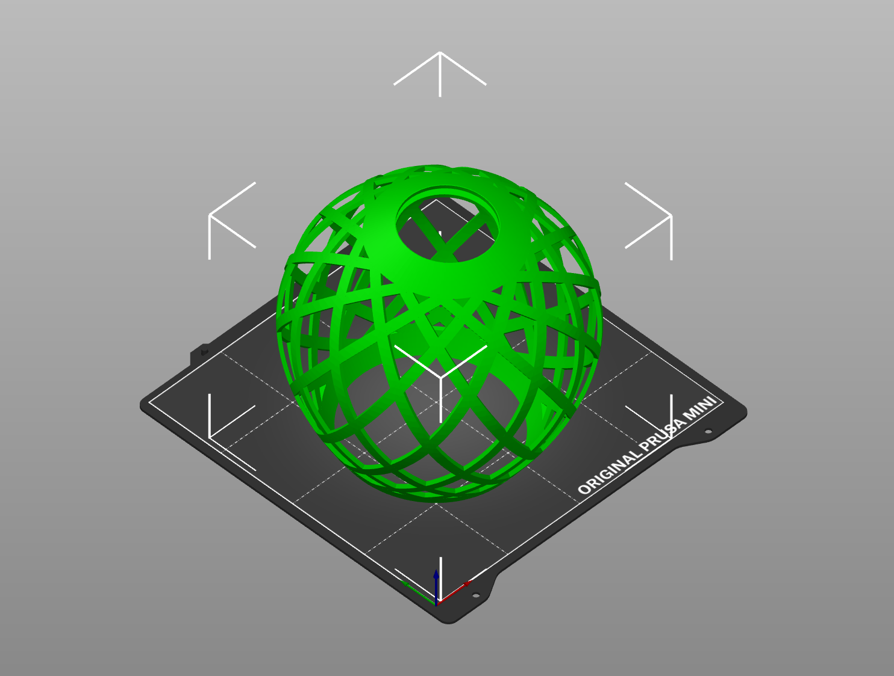
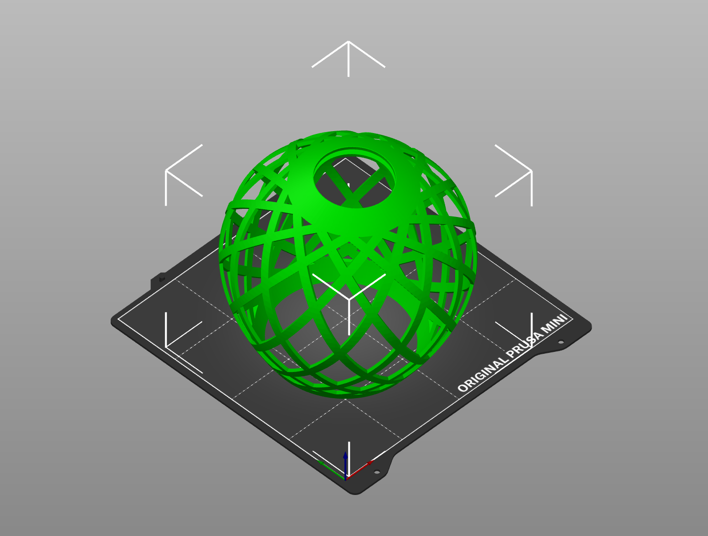
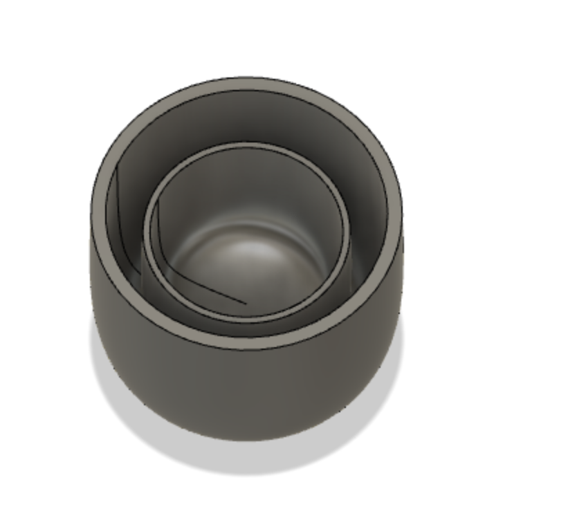

Week 5: 3D Modeling
Today, I got to mess around with 3d structures in Fusion 360. I was able to make a lampshade, following a similar pattern to that of the youtube channel of Fusion 360. I also downloaded the Prusa Slicer which seems like the software needed to take our files (.stl) and then actually make it into a 3D printable file. I am pretty familiar with this software, but I learned about the Sketch Inspect function and the Projection Sketch function, which are super helpful! Below is what I created in Fusion, followed by what the Prusa slicer spits out.
 

(Note: the letter etween v and n on my keyoard is not working) I also got to mess around with the 3d Scanner and got to take a scan of my own head. I don't have any pictures of it, since it is on the computer in the classroom. It was not perfect, yet I found a trick of raising and lowering the machine as you go around (especially around the hair), helps it find areas it may not have seen prior (simply due to lighting issues I think). I also this week tried making a structure that would e challenging to make if we made it with sutraction. I made a chip dip that has two shells (one for salsa/guac and another for the chips themselves. This would e challenging to make with sutraction due to the inner gap etween oth "urns". Here is what my Chip Dip looks like.
